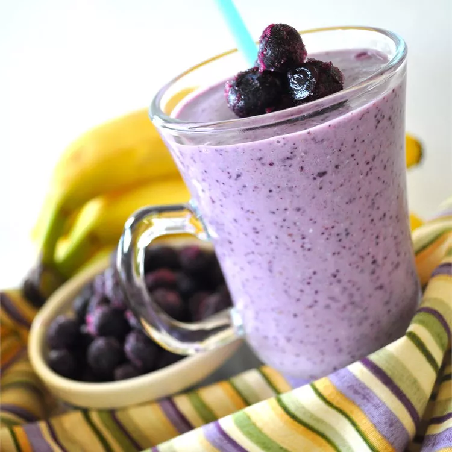

Razzy Blue Smoothie

Description
This naturally sweet and creamy, frosty cold smoothie packs a lot of flavor and a nutritious punch. This easy Blueberry smoothie recipe makes refreshingly delicious and wonderfully healthy blueberry smoothies in only a few minutes. Follow my simple instructions with step-by-step photos to blend together a vitamins and minerals-packed smoothie with blueberries (fresh or frozen) any time you want a tasty burst of nutrients!
Ingredients
- 1 banana
- 16 whole almonds
- ¼ cup rolled oats
- 1 tablespoon flaxseed meal
- 1 cup frozen blueberries
- 1 cup raspberry yogurt
- ¼ cup Concord grape juice
- 1 cup 1% buttermilk
Steps
- Peel the banana and cut into 1/2-inch chunks. Chill in freezer until solid, about 2 hours.
- Place the almonds, oats, and flaxseed meal into a blender; pulse until finely ground. Add the frozen banana, frozen blueberries, yogurt, grape juice, and buttermilk; puree until smooth.
Return to main list